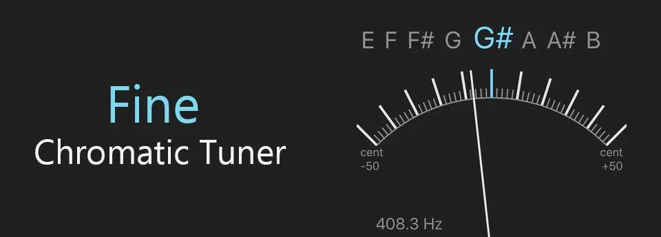
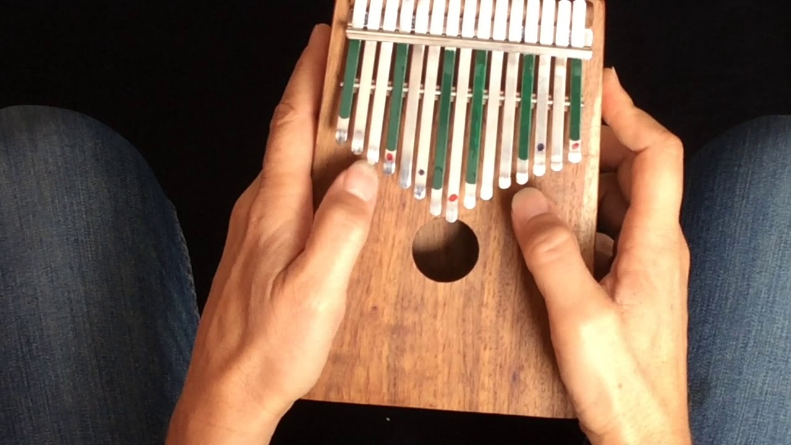

Что такое калимба?
Калимба — это компактный музыкальный инструмент, который по звучанию напоминает музыкальную шкатулку
Как выбрать калимбу
Несколько советов о том какую калимбу выбрать если вы только начинаете знакомство с этим замечательным инструментом
Как играть на калимбе
Чтобы играть на калимбе, не обязательно знать ноты, что делает этот инструмент еще более привлекательным.

Как настроить калимбу
Настройка калимбы - это простой процесс, который можно выполнить с помощью нескольких простых инструментов.
История
Голос африки. Где и когда появилась калимба, как этот инструмент распространился по всему миру.

Приёмы игры на калимбе
Эти неочевидные приёмы игры на калимбе делают звучание инструмента более интересным и насыщенным